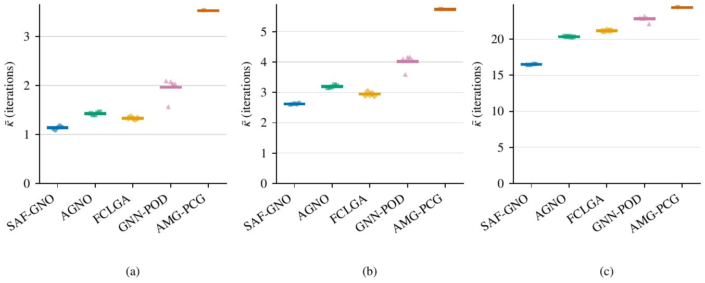
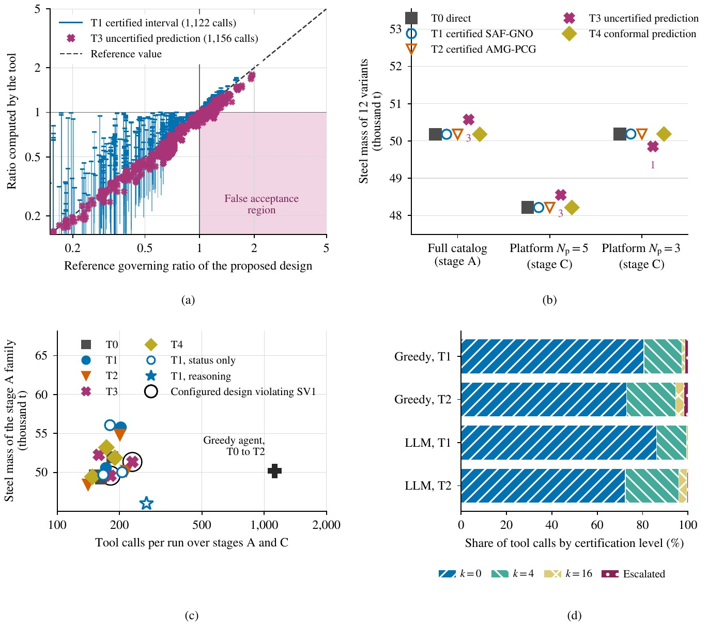

Explore the decisions
Drag the divider to wipe between the reference classifications and the certified decisions of a validation structure, or cycle the frames.
◂▸
within the limit
exceeding the limit
uncertified

Iterations to certification on structures larger than every training structure.

Platform configuration with certified, uncertified and conformal verification tools.